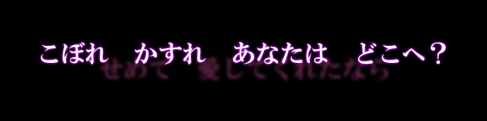

|  |
| 残響、彼岸過迄。 |
■INFOMATION■ 2012年12月30日 コミックマーケット83 東ケ-19b 「A-HEAD」 イベント頒布価格 800円 委託価格 1050円（税込） メロンブックス様にて予約受付中です。  ■TRACK LIST■ 1, 泡沫残想 instrumental （妖々夢 ～ Snow or Cherry Petal） 2, Alice in seventh （ブクレシュティの人形師/人形裁判 ～ 人の形弄びし少女） 3, コモリウタ （the Grimoire of Alice/不思議の国のアリス） 4, 嫉妬に燃える緑、最後に映した景色 （緑眼のジェラシー） 5, Uncontrollable impulse （霊知の太陽信仰 ～ Nuclear Fusion） 6, 渇望 （メイガスナイト） 7, 幽かな残滓 -閉- （彼岸帰航 ～ Reverside view/アルティメットトゥルース） 8, 幽かな残滓 -塞- （死霊の夜桜/ゴーストリード） ■STAFF LIST■ Music Composed by ZUN Produced by A-HEAD Music Arranged/Guitar & Bass Played/Drums Manipulated/Mixed/Masterd by 秋時 Except "幽かな残滓 -塞-" Arranged by arato Vocals by A(仮)（Tr.4,6）/arato（Tr.2,3,5,7,8） Vocal Recording (Track4,6) Engineer - yuta at Chaoscillation Studio Tr.5 Lch Guitar Played & Guitar Solo by mcn Tr.5 Bass Played by たわし Lyrics Written by マカキセキ（Tr.2,3,4,5,7,8）/秋時（Tr.6） Jacket Illustrated by ザネリ/駒碧 Art Design by 秋時 logo Design by マ カキセキ ■LINK■ サイズ468×95 (http://a-head.cc/c83/banner468.jpg)  サイズ200×40 (http://a-head.cc/c83/banner200.jpg) ■応援LINK■         |